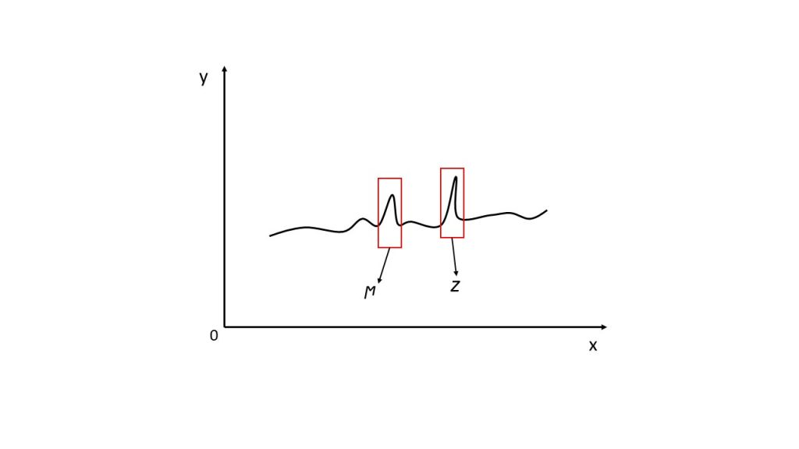
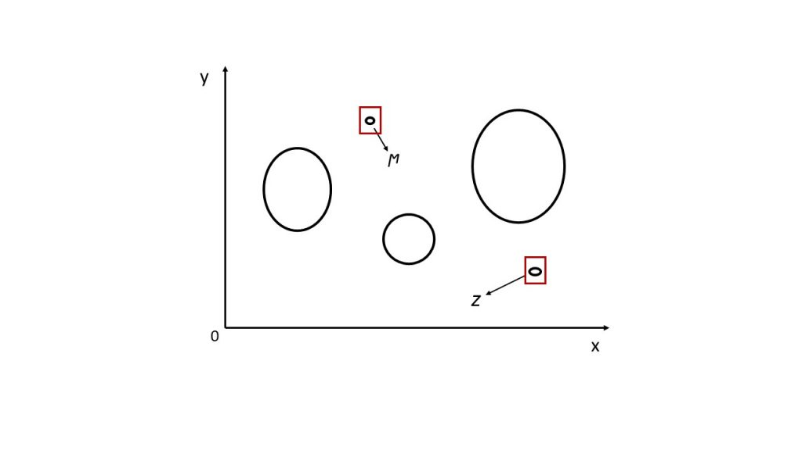
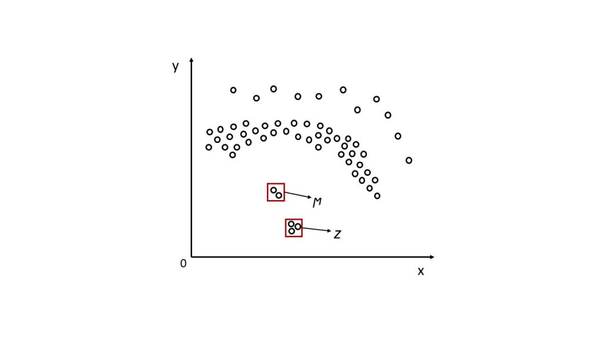
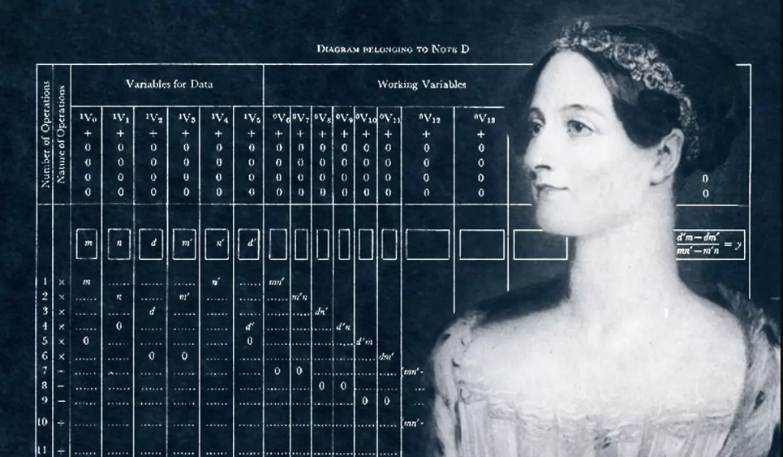
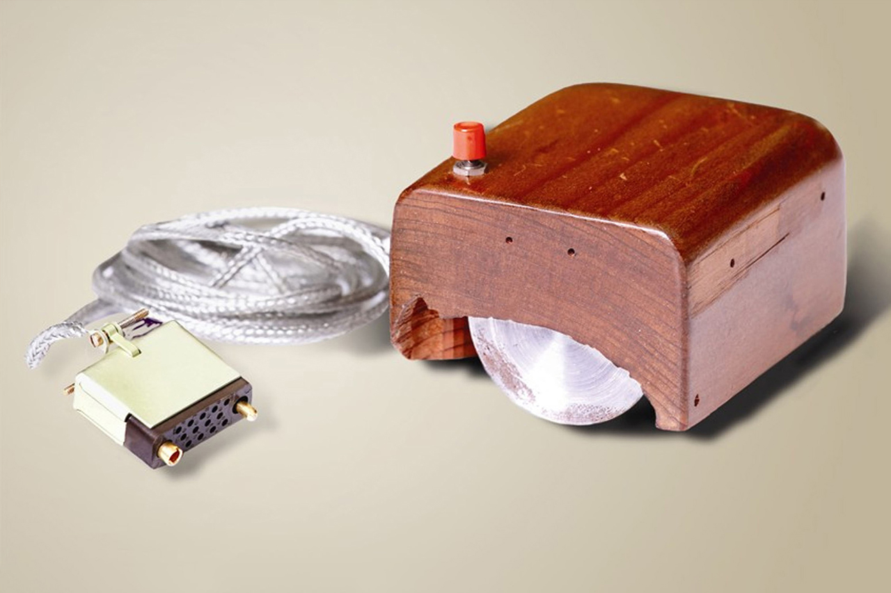
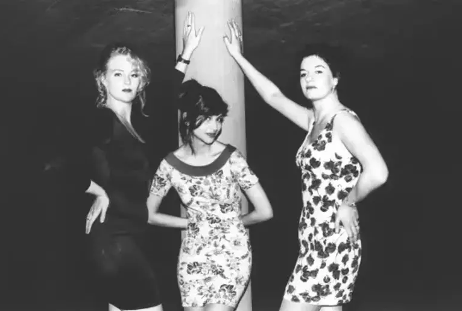
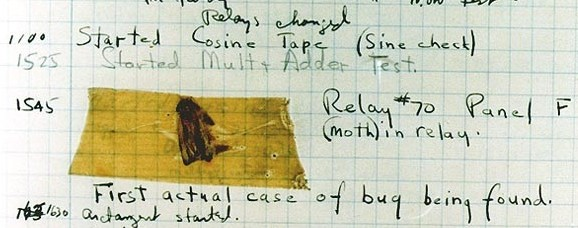

Anomali tespiti, bir veri kümesinde normallikten sapmış aykırı değerleri, farklı öğeleri ve olayları belirleme sürecini ifade eder. Bu tür değerler veya durumlar literatürde "Aykırı Değer" ya da bazı yazılım dillerinde sıkça karşılaşılan "İstisna (Exception)" şeklinde adlandırılır.
Makine öğrenimi modelinin performansı, veri kümesinin tutarlılığı ve verilerin ölçümlenebilir modellere uyarlanabilirliği üzerinde doğrudan etki yapar. Bu nedenle, bu tür sorunların önüne geçmek için genellikle veri setinin eğitim için hazırlanması aşamasında Keşifsel Veri Analizi (EDA) kullanılır. EDA, istatistiksel grafikler ve diğer veri görselleştirme yöntemleri aracılığıyla veri kümesinin temel özelliklerini özetleyerek, modelleme öncesinde verilerin neler söyleyebileceğini anlamamıza yardımcı olur.
Bu analiz süreci, bilinçli bir şekilde veya farkına varmadan veri kümesinin eğitim için hazırlanmasıyla ilgilenir. İstatistiksel grafikler ve diğer veri görselleştirme yöntemleri, veri setinin temel özelliklerini görsel olarak özetler, böylece verilerin anlaşılması ve modele entegrasyonu daha etkili bir şekilde gerçekleşir.
Öğrenme modelinin performansı, veri kümesinin tutarlılığına ve verilerin ölçümlenebilir modellere uyarlanabilirliğine büyük ölçüde bağlıdır. Bu nedenle, veri analizi süreci, modelin güvenilir ve etkili bir şekilde çalışabilmesi için temel bir adımdır. Keşifsel Veri Analizi, verilerin özelliklerini anlama ve modelleme sürecine hazırlık yapma konusunda değerli bir araçtır, çünkü bu süreçte ortaya çıkabilecek potansiyel problemleri belirleme ve çözme konusunda rehberlik eder. Bu sayede, öğrenme modelinin başarı şansı artar ve anlamlı sonuçlar elde etmek daha olası hale gelir.
Temsili (sembolik) olarak anomali;

Her ne kadar yöntemsel adapte olma veya kavramsal tanımlamalarda çaba sarfetseniz de analizlerde karşılaştığımız bazı kilit noktalar olabilir. Bu ön analiz aşamasında sıkça karşılaşılan kavramsal veya mantıksal zorluklar arasında iki önemli terim bulunmaktadır:
Gürültü (Noise) ve Anomali.
Anomali, bir veri kümesinde bulunan normlardan sapmış aykırı değerleri, farklı öğeleri ve olayları ifade eder. Örneğin, Elon Musk veya Jeff Bezos'un servet miktarı, dünya genelindeki insanların servet düzeyine kıyasla anomali değerlere örnek olabilir.
Diğer yandan, gürültü, veri girişi, işlenmesi veya toplanması sırasında oluşan hataları temsil eder. Yanlış veri girişi, yanlış etiketleme gibi durumlar gürültü oluşturabilir. Örneğin, anket yaparken bazı insanların yanlış beyanlarda bulunması, verilere sapmalara neden olabilir.
Analizimizi bir örnek üzerinden düşündüğümüzde, temiz veri modeli, varsayılan model içinde tanımlanabilen parametrelerle karakterize edilebilir. Gürültü ise varsayılan olasılık dağılımını takip etmeyen farklı veri türlerini içerir. Bu iki kavramın kesişim noktasında ise aykırı değerler bulunur, yani bunlar varsayılan modeli takip etmeyen veri noktalarıdır.
Literatürde belirgin bir şekilde aykırı değer (anomali) veya gürültüyü ayıran kesin bir tanım bulunmamakla birlikte, araştırmacıların ve toplulukların perspektifine göre, analizlerimize uymayan veya uyumsuz olan verilere aykırı değer denir.
Temsili (sembolik) olarak gürültü ve anomali;


+90 546-580-35-21
kayrausta04@gmail.com
Merhaba, ben Kayra Halil Usta. Kırklareli Üniversitesinde Bilgisayar Programcılığı, Eskişehir
Anadolu Üniversitesinde Web Tasarımı Ve Kodlama okuyorum. 4 Ekim 2004 İstanbul doğumluyum. Okulda
kendim ve arkadaşlarımın projelerini ve araştırmalarını bilgisayar ile ilgili bölüm okuyan ve bilgisayar
ile ilgilenen herkese yardımcı olması amacı ile paylaşıyorum. Ayrıca yine üniversiten arkadaşlarla kurduğumuz KRKIT.COM adresinde ve İnstagram sayfasında
her türlü web hizmetini veriyoruz. Detaylı bilgi için ilgili linklerden ulaşabilirsiniz.
Bilgisayarla İlgili İlginç Bilgiler;

İlk Bilgisayar Programı:
İlk bilgisayar programı, 19. yüzyıl matematikçisi Ada Lovelace tarafından yazılmıştır. Ada Lovelace, Charles Babbage'in tasarladığı Analitik Makine için bir program geliştirmiş ve bu nedenle tarihte ilk bilgisayar programcısı olarak kabul edilir.

Mouse'un İcadı:
Mouse, Douglas Engelbart tarafından 1964 yılında icat edildi. İlk fare, ahşap bir kasa üzerinde iki tekerlek ve bir düğme içeriyordu. Günümüzde ise fare tasarımları oldukça çeşitlilik gösteriyor.

Internet'in İlk Fotoğrafı:
World Wide Web'in (WWW) kurucusu Tim Berners-Lee, İsviçre'deki CERN'de ilk web tarayıcısı ve sunucusunu geliştirdi. İlk web sitesinde bulunan fotoğraf ise "Les Horribles Cernettes" adlı bir müzik grubuna aitti

En İlk Bilgisayar Bug'u:
Bilgisayar hatalarının adı olan "bug" terimi, 1947'de Harvard Mark II bilgisayarındaki bir sorunu giderirken, bilgisayarın içine giren bir güve nedeniyle ortaya çıktı. Bu olay, bilgisayar hatalarına "bug" demenin başlangıcını oluşturdu.
 +90 546-580-35-21
+90 546-580-35-21 kayrausta04@gmail.com
kayrausta04@gmail.com